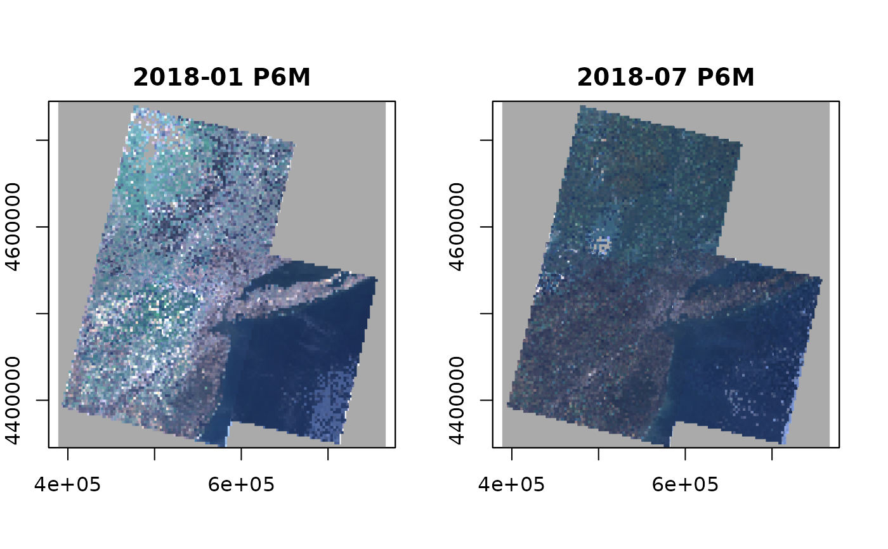

Aggregate data cube time series to lower temporal resolution
Source:R/aggregate_time.R
aggregate_time.RdCreate a proxy data cube, which applies an aggregation function over pixel time series to lower temporal resolution.
Arguments
- cube
source data cube
- dt
character; new temporal resolution, datetime period string, e.g. "P1M"
- method
aggregation method, one of "mean", "min", "max", "median", "count", "sum", "prod", "var", and "sd"
- fact
simple integer factor defining how many cells become aggregated to a single new cell, can be used instead of dt
Details
This function can be used to aggregate time series to lower resolution or to regularize a data cube with irregular (labeled) time axis. It is possible to change the unit of the temporal resolution (e.g. to create monthly composites from daily images). The size of the cube may be expanded automatically if the original temporal extent is not divisible by the new temporal size of pixels.
Note
This function returns a proxy object, i.e., it will not start any computations besides deriving the shape of the result.
Examples
# create image collection from example Landsat data only
# if not already done in other examples
if (!file.exists(file.path(tempdir(), "L8.db"))) {
L8_files <- list.files(system.file("L8NY18", package = "gdalcubes"),
".TIF", recursive = TRUE, full.names = TRUE)
create_image_collection(L8_files, "L8_L1TP", file.path(tempdir(), "L8.db"))
}
#> Image collection object, referencing 19 images with 12 bands
#> Images:
#> name left top bottom
#> 1 LC08_L1TP_013032_20180131_20180207_01_T1 -74.67898 41.39099 39.25027
#> 2 LC08_L1TP_013032_20180405_20180417_01_T1 -74.70333 41.39106 39.25080
#> 3 LC08_L1TP_013032_20180421_20180502_01_T1 -74.70681 41.39107 39.25098
#> 4 LC08_L1TP_013032_20180710_20180717_01_T1 -74.66854 41.39096 39.24991
#> 5 LC08_L1TP_013032_20180827_20180911_01_T1 -74.67202 41.39097 39.25000
#> 6 LC08_L1TP_013032_20181030_20181115_01_T1 -74.69637 41.39104 39.25062
#> right datetime srs
#> 1 -71.92546 2018-01-31T00:00:00 EPSG:32618
#> 2 -71.94695 2018-04-05T00:00:00 EPSG:32618
#> 3 -71.95411 2018-04-21T00:00:00 EPSG:32618
#> 4 -71.91114 2018-07-10T00:00:00 EPSG:32618
#> 5 -71.91472 2018-08-27T00:00:00 EPSG:32618
#> 6 -71.93979 2018-10-30T00:00:00 EPSG:32618
#> [ omitted 13 images ]
#>
#> Bands:
#> name offset scale unit nodata image_count
#> 1 B01 0 1 0.000000 19
#> 2 B02 0 1 0.000000 19
#> 3 B03 0 1 0.000000 19
#> 4 B04 0 1 0.000000 19
#> 5 B05 0 1 0.000000 19
#> 6 B06 0 1 0.000000 19
#> 7 B07 0 1 0.000000 19
#> 8 B08 0 1 0.000000 19
#> 9 B09 0 1 0.000000 19
#> 10 B10 0 1 0.000000 19
#> 11 B11 0 1 0.000000 19
#> 12 BQA 0 1 19
#>
L8.col = image_collection(file.path(tempdir(), "L8.db"))
v = cube_view(extent=list(left=388941.2, right=766552.4,
bottom=4345299, top=4744931, t0="2018-01", t1="2018-12"),
srs="EPSG:32618", nx = 497, ny=526, dt="P3M", aggregation = "median")
L8.cube = raster_cube(L8.col, v, mask=image_mask("BQA", bits=4, values=16))
L8.rgb = select_bands(L8.cube, c("B02", "B03", "B04"))
L8.two_monthly = aggregate_time(L8.rgb, "P6M", "min")
L8.two_monthly
#> A GDAL data cube proxy object
#>
#> Dimensions:
#> low high count pixel_size chunk_size
#> t 2018-01 2018-12 2 P6M 1
#> y 4345299 4744931 526 759.756653992395 384
#> x 388941.2 766552.4 497 759.781086519115 384
#>
#> Bands:
#> name offset scale nodata unit
#> 1 B02 0 1 NaN
#> 2 B03 0 1 NaN
#> 3 B04 0 1 NaN
#>
# \donttest{
plot(L8.two_monthly, rgb=3:1, zlim=c(5000,12000))

# }